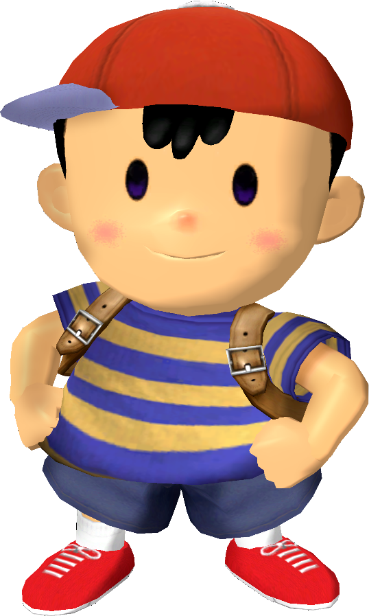

|  | Ranked 23rd of tier list : NESS |
| Weight | |
|---|---|
| 11th heaviest | |
| Shield stats | |
| Roll lenght | 20th longest |
| Shield size | 10-12th biggest |
| Grab range | 25th longest |
| Wavedash lenght | 11th longest |
| Movement stats | |
| Walking speed | 22th fastest |
| Turning speed | 17-18th fastest |
| Running speed | 16-20th fastest |
| Aerial stats | |
| Jump squat | 5 frames (8th fastest) |
| Short hop | 14-15th highest |
| Aerial speed | 11th fastest |
| First jump height | 12-13th highest |
| Seconde jump height | 6-7th highest |
| Total jump height | 10th highest |
| Average fall speed | 15th fastest |
| Fast falling speed | 19-20th fastest |
| Falling speed | 15th fastest |
| Ledge stats | |
| 0-99% ledge roll | 10th longest |
| 100%+ ledge roll | 8th longest |
| 0-99% ledge attack range | 22-24th farthest |
| 100%+ ledge attack range | 25th farthest |
| Intangible ledgedash (Optimal) | 4 frames |
| Notable players | |
| Simna Ibn Sind, HungryBox, Vrud, Kahnu | |
| Smashboard forum | |
| http://smashboards.com/forums/ness.79/ | |
Ness is currently ranked 23rd in the F tier. While still having fantastic throws and a great aerial game due to his double jump cancel, Ness has a poor approach on the ground and in the air due to significant range issues in most of his attacks; his recovery is also easy to intercept and edgeguard against, and he also has significant trouble KOing opponents, again owing to his poor range. As a result of these significant weaknesses, Ness has terrible matchups, with six unfavorable, one even (against Yoshi), and only three favorable (against Bowser, Kirby, and Pichu).